Two-sided marketplaces such as eBay, Etsy and Taobao have two distinct groups of customers: buyers who use the platform to seek the most relevant and interesting item to purchase and sellers who view the same platform as a tool to reach out to their audience and grow their business. Additionally, platforms have their own objectives ranging from growing both buyer and seller user bases to revenue maximization. It is not difficult to see that it would be challenging to obtain a globally favorable outcome for all parties. Taking the search experience as an example, any interventions are likely to impact either buyers or sellers unfairly to course correct for a greater perceived need.
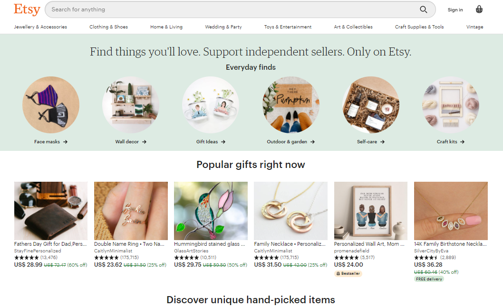
Etsy is a two-sided online marketplace with over 50 million handmade and vintage items where sellers sell handmade items, and where buyers go to purchase personalized handmade items. One feature of Etsy, is that it provides personalized item recommendations to buyers based on their previous interactions on the site. For Etsy, users come to rely on personalized recommendations to surface relevant items from its massive inventory. One hallmark of Etsy's shopping experience is the multitude of ways in which a user can interact with an item they are interested in: they can view it, favorite it, add it to a collection, add it to cart, purchase it, etc.
Implicit feedback includes all of a users interactions on a site including the items that they purchased, items that they favorited, items that they clicked on and even items that they saw but made no interaction with.
Etsy wanted to use this kind of information in combination with user and listing features to train their machine learning models and predict the probability of purchase as their recommender system. With these probabilities of purchase, they could also use it to infer how new users might make purchases.
Etsy use Latent Dirichlet Allocation to generate style profiles for all items and builds a distribution for each user amongst the style profile. Aryafar says that ‘LDA essentially gives you these style profiles and it also gives you the distribution of users preference in terms of these style profiles'. These distributions then allow users to be positioned near users who have a similar style profiles to serve recommendations.
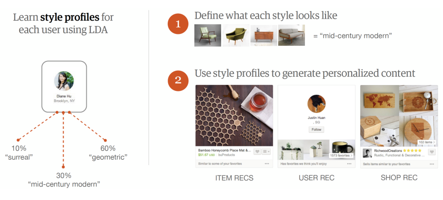
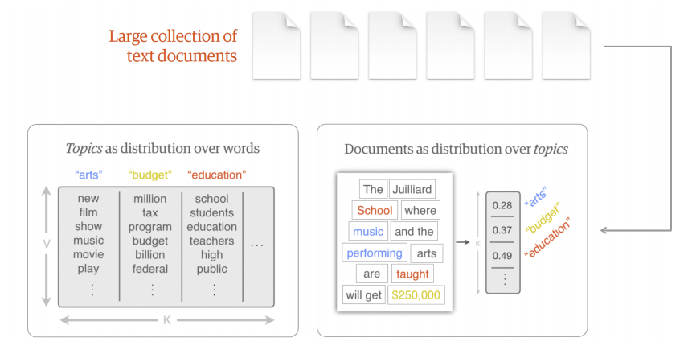
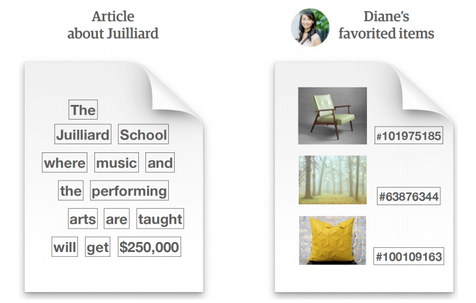
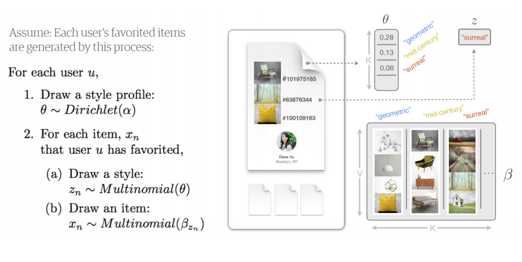
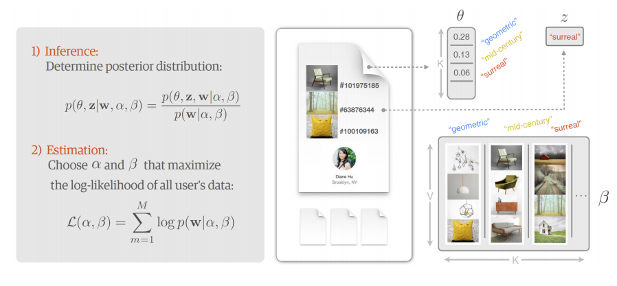
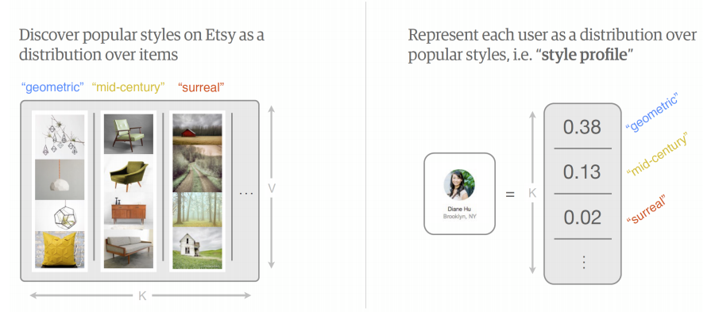
A problem that Etsy faced is that they had too many users and too many product listings to compute all of these purchase probabilities. Therefore, they did it in a two stage process: 1) "Candidate Selection" in which millions of listings are filtered down to hundreds of relevant items and 2) "Ranker" in which those items are then ranked based on relevance using more precision.
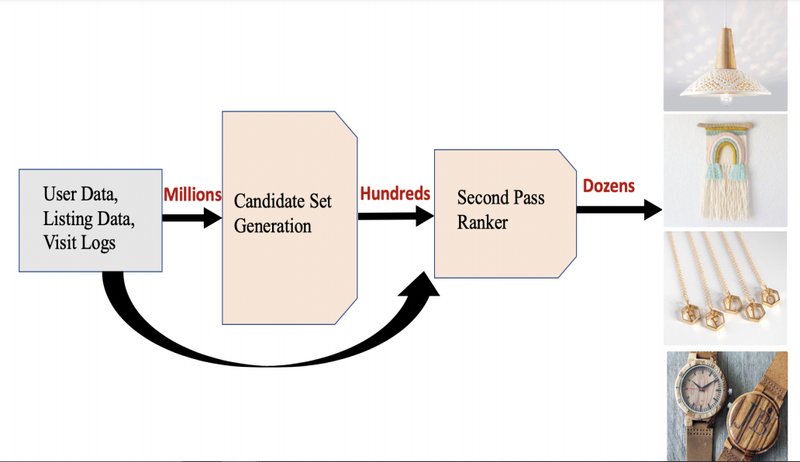
Originally, the second stage "Ranker" used a linear model, but more recently there has been experimentation using non-linear models and deep neural networks (DNNs); a DNN is better in this case because it provides a better fit of the model. After experimentation, it was found that a 3-layer neural network was optimal for predicting the likelihood of purchase.
Etsy's proposed model is based on word2vec, a popular method in natural language processing (NLP) for learning a semi-supervised model to discover semantic similarity across words in a corpus using an unlabelled body of text. The same method can be used to model user interactions at Etsy by modeling users' journeys in aggregate as a sequence of user engagements on listings, i.e., viewed, favored, add-to-carted or purchased. Each user session is analogous to a sentence, and each user action is analogous to a word in NLP word2vec parlance. This method of modeling interactions allows us to represent items or other entities (i.e., shops, users, queries) as low dimensional continuous vectors, where the similarity across two different vectors represents their co-relatedness. Semantic embeddings are agnostic to the content of items such as their titles, tags, descriptions, and allow us to leverage aggregate user interactions on the site to extract items that are semantically similar.
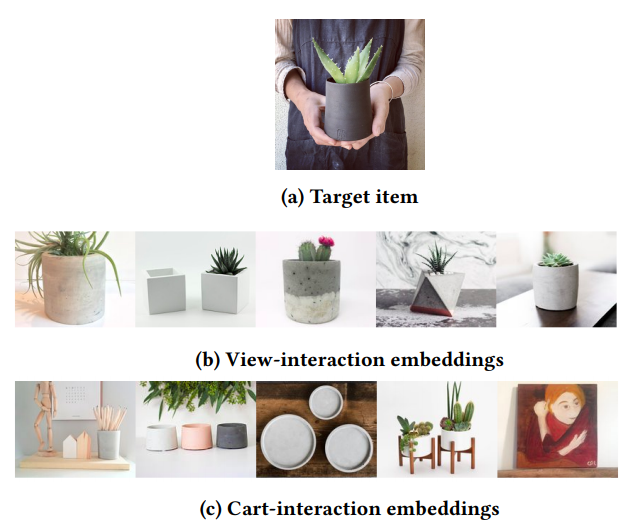
Let L denote the set of items and I the set of interaction types a user can have with an item (e.g., view, favorite, add-to-cart, purchase). Each user's visit on Etsy triggers a session S = {p1, ... ,pk }, which consists of a sequence of item-interaction pairs pj ∈ L × I. For example, the sequence (ℓ1, view), (ℓ2, favorite), (ℓ1, purchase) specifies that a user first viewed item ℓ1, then favorited item ℓ2, and lastly purchased item ℓ1. The training data consists of such sequences collected from multiple users over a set period of time.
A crucial task for industry-scale recommendation systems is its ability to quickly retrieve a small set of relevant items out of a large set (potentially in the range of hundreds of millions) of candidate items. This is necessary as it is computationally infeasible to apply machine-learned models over the entire collection of candidate items. In practice, this is referred to as the candidate set selection phase, which aims to quickly prune irrelevant items while retrieving items that are likely to be relevant to the user at low cost. The smaller set is then re-ranked by a (typically, more sophisticated) machine learning model.
While candidate set selection has always been an important component of large-scale recommendation systems, it is often overlooked in favor of discussing the machine learned re-ranking model. Many previous works depend on basic heuristics that measure goodness of match between the user and items based on product category or taxonomy matching schemes, or simple popularity rankings. Beyond basic heuristics, co-occurring signals have been a popular method for simple and efficient candidate set selection. Amazon tracks pairs of items that are frequently co-purchased by the same customers and constructs candidate sets by retrieving items that have been frequently co-purchased with a customer's last viewed items. Pinterest's related pin recommendations system selects candidate pins based on board co-occurrence, the number of times a pin has been pinned to the same board. Other candidate set models include variations on the random walk, as well as collaborative filtering or deep network approaches that incorporate user's historical interactions. Another class of algorithms come from IR, utilizing fast query-document retrieval engines to match user and item features.
While these methods are undoubtedly successful, Etsy's candidate set selection method explicitly considers the target item to generate candidate sets based on interaction type. This method can be seen as a generalization of using co-occurrence counts, a popular approach for candidate set selection in the past. The underlying concept there assumes that if a pair of items has been viewed or purchased together within a short amount of time by the same user, there's a good chance the two items are related. However, this method does not consider the different ways in which a customer can interact with items, usually focusing only on co-purchases, and requires items to have been explicitly co-purchased together, leading to low coverage. Etsy's proposed method is more flexible and generalizes beyond explicit co-occurrence counts, with the ability to give recommendations along the lines of "Because you X this, you may also want to Y that", where X and Y are any interaction types.
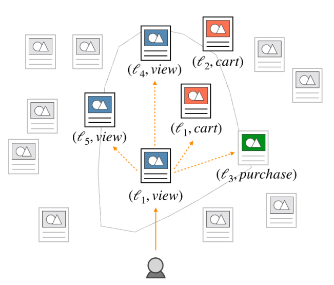
Example of the item-interaction pair embedding space. Given a user's last action (e.g. viewed listing ℓ1), the top K nearest neighbors should indicate which item the user is likely to interact with, as well as how the user will interact with it (e.g. the user may view items ℓ4 or ℓ5; cart items ℓ1 or ℓ2; or purchase item ℓ3).
The learned embeddings described above now give us a convenient way of encoding co-occurrence patterns between items and the way users interact with them. A nice property is that the inner product between two such embeddings should approximate the likelihood that one item-interaction pair would co-occur with another. Because of its computational efficiency, it is easy to approximate the affinity between tens of millions of pairs of embedding vectors, lending itself naturally as a candidate set selection solution. For example, to answer a question such as "since a user viewed on item A, what is an item they may add to cart next?", we can simply find the nearest "cart" embedding to item A's "view" embedding. A user-specific candidate set can then be generated by finding the closest listings to each of the user's past item-interaction pairs in the embedded space.
The training data spans a one year period of visit log collected from Nov 2017 to Oct 2018, and is extracted from implicit feedback collected from users visiting Etsy during that period. In particular, each training instance is defined by a user's session and consisted of a sequence of item-interaction pairs sorted chronologically.
Only sessions which had more than three item-interaction pairs were selected, to eliminate bounces. The resulting dataset has about 30 billion words from over 200 millions distinct tokens.
The proposed model uses the negative sampling to facilitate computational efficiency in model training and improve the quality of the low-dimensional vector representations. As the initial step in the implementation of negative sampling, they define the following partial order on the set of interactions we consider: purchase > add-to-cart > favorite > view. For each item-interaction pair p = (ℓ,i) of a given session S, they add negative samples pj = (ℓ, j), for all interactions j > i, provided that the pair pj < S. For example, if an item has been viewed and added-to-cart, we associate with it a negative purchase. A natural drawback of this approach is that it precludes the addition of negative samples having view as an interaction. To account for this, we include two negative pairs (ℓ1, view), (ℓ2, view), for each item ℓ that was only viewed. The items ℓ1, ℓ2 are drawn uniformly at random from the set of items belonging to the same taxonomy as ℓ in order to capture the user's preference in the item viewed in said taxonomy.
In order to support custom negative sampling, Etsy used the fastText library to train the embedding models with extended functionalities built on top of the existing library. The primary innovation from fastText is that it enriches the word2vec model with subword information by adding a bag of character ngrams. They experimented with tuning several hyperparameters of the model and eventually chose to set the context window to m = 5 and the embedding dimension to d = 100.
To help avoid the computational workload from serving recommendation from enormous matrices for each of the more than 50 million users, Etsy use locality sensitive hashing to pool similar items into buckets which assumes that users will fall into the same bucket if they have similar tastes. Team added five random negative samples in each of our sequences. After training, they use the approximate K-nearest neighbor search algorithm, Hierarchical Navigable Small World from Faiss (HNSW), in order to get the top k similar items for each learned iteminteraction pair.
To balance efficiency with accuracy, they set the following hyperparameters in HNSW (efSearch = 256, efConstruction = 128, linksPerVector = 64) to scale up the approximated neighborhood search over hundreds of millions item-interaction pairs from embedding training.
Once Etsy developed their recommender system for relevant items, they than wanted to see if they could optimize for both relevance and profit at the same time. So, instead of only showing users relevant items, or showing them items priced from highest to lowest, they wanted to find an optimum where they could show a relevant item while not compromising on revenue. Therefore, they introduced a revenue term into their model, and were successful at optimizing for revenue without compromising on relevance.
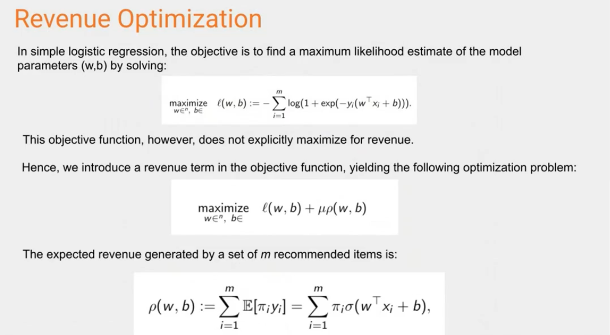
When it came to evaluating the model, metrics used included Area under the Curve (AUC) for relevance, Normalized Discounted Cumulative Gain (NDCG) used for ranking in terms of both relevance and price and then price based metrics like Profit.
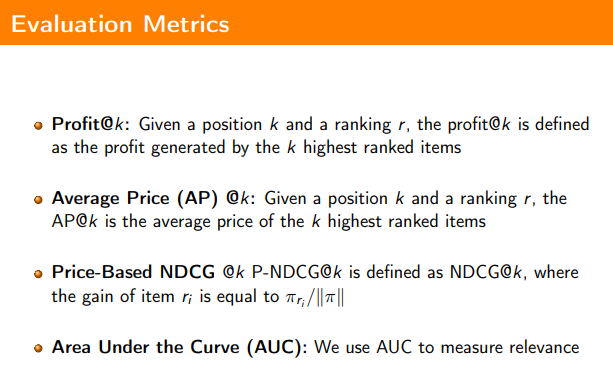
When compared against linear regression, and logistic and weighted logistic regressions for baseline performance, the new revenue-relevance model was in fact able to attain the highest Profit and AUC metrics among these.
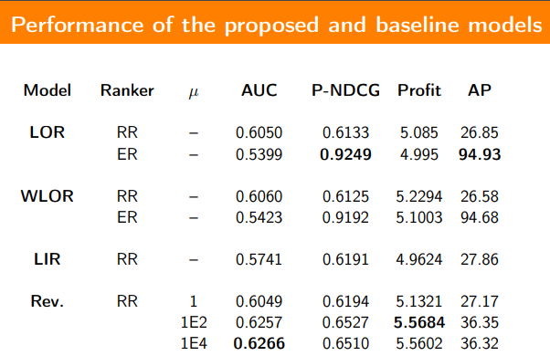
The value of having a data science team for recommender systems at Etsy is tangible through comprehensive A/B testing. In the following figures, we can see a visual examples of the recommendations received by users in the two buckets of live A/B test on the homepage on etsy.com. The test was run for 7 days in which bucketed 50% of signed-in users into the control group, and the remainder into the treatment group. The control group received a single module that recommends items using a candidate set that matched items based on the last 100 items that the user interacted with, regardless of the interaction type. The treatment group received two separate modules: The first module finds the closest item-interaction embeddings based on the last 4 items that the user had viewed; the second module is computed similarly but is based on the last 4 items that the user has added to cart. This treatment group option was preferred as it offers more explainability to the user.
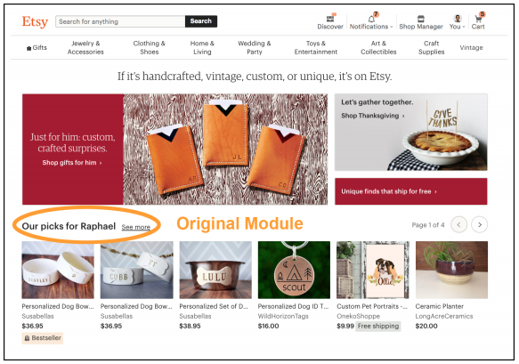
Control group
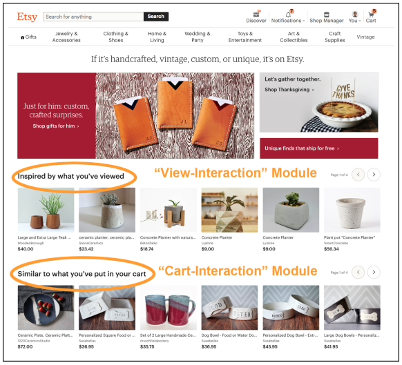
Treatment group
Both the control and treatment groups used the same re-ranking model on top of the candidate set selection phase, which has an objective function that is optimized for predicting purchases, and uses a variety of historical user and listing rates and content features. While the team prepared additional modules based on favoriting and purchasing behavior, they were not deployed to the live A/B test due to their lower-than-desired offline metrics.
For this particular experiment, the metrics that were tracked include site-wide click-through-rate, conversion rate, and add-tocart rate. Given the preliminary experimental data, team observed promising upward trend in many key metrics, although more data is needed to gain statistical significance. Compared to the control, the first module in the treatment ("Inspired by what you've viewed") showed 4.1% improvement in click-through-rate. Additionally, the "treatment" group showed 0.20% and 0.31.
With a large pool of candidate listings, personalized search is an important tool to help users find items that best fit their preferences. Head queries account for the lion's share of purchases from the site. Many of these queries are vague, short in length, and have a myriad of search results. As an example, in 2020 the top searched query on Etsy was "personalized gifts", which had over 5 million search results.
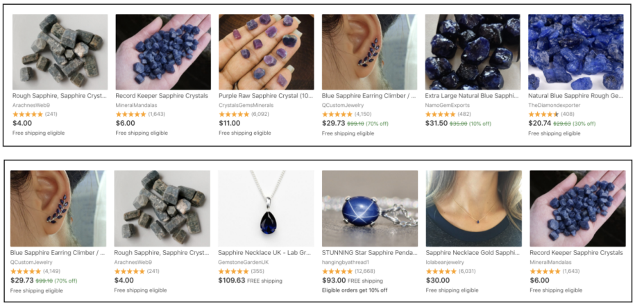
Personalized search results for query "sapphire". User purchased "gemstone", "crystal", and "birthstone" items (top). User purchased "necklace" and "jewelry" items (bottom).
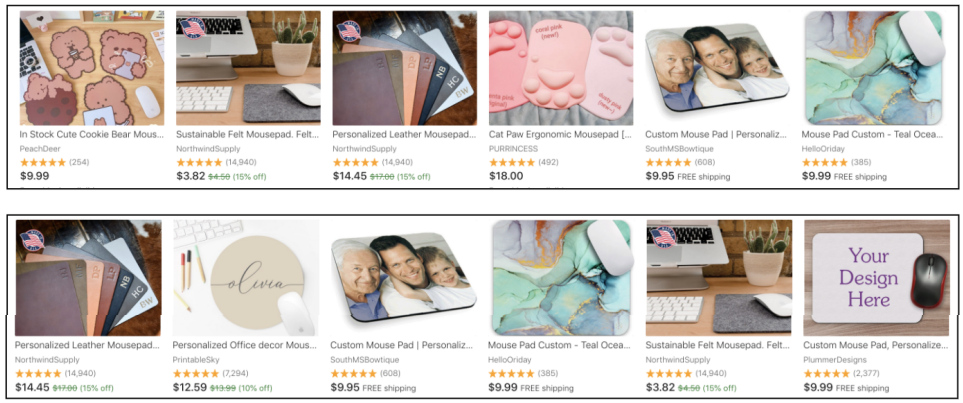
Results for query "mousepad". Top user previously purchased "kawaii" and "cute" items; bottom user purchased "monogram" and "family photo" items.
Etsy built a personalized search system via user profile and query representations constructed based on multiple implicit feedback types and various time windows of aggregation. With these features, purchase NDCG@10 and user conversion rates increase overall. Personalization affects users differently, with active users converting at a greater rate due to their richer user history compared to inactive users. The traffic on the mobile application platform generates more personalized results compared to web traffic.
Etsy use an ensemble gradient boosted decision tree with LambdaMART algorithm in the second pass of the information retrieval system. They experiment with two personalized variants in addition to the baseline to track the incremental changes with the addition of new feature groups.
Team measured the degree to which personalization affects different query segments and found that the top 0.01% of head queries generate the lowest similarity of rankings between users, as measured by the Kendall Tau correlation coefficient. For search results pages, there can be a positional biases of the listings. Fairness and inclusivity is an important component of search ranking and recommendations.
For offline evaluation, they look at purchase NDCG@10. For online evaluation, they look at purchase NDCG as well as user conversion rates, user clicks per session and user rates of return. To measure the degree of personalization, they look at Kendall Tau correlation for query bins, platform traffic, and model variants.
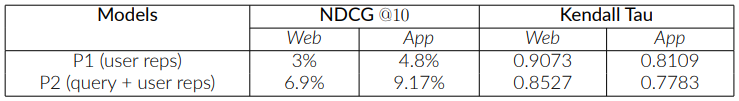
Offline evaluations of personalized models P1 and P2 vs Baseline (non personalized), measured by % change in NDCG@10 and degree of personalization in Kendall Tau coefficients. A lower Kendall Tau score means greater degree of personalization.
Congratulations!